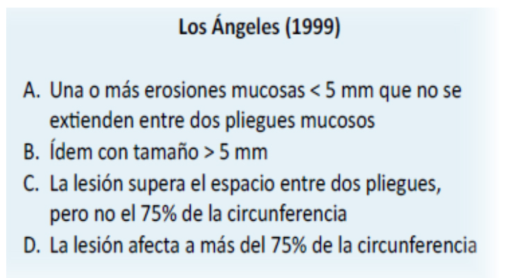
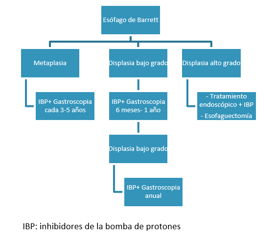

<div class="pages">
  <div data-page="projects" class="page no-toolbar no-navbar">
    <div class="page-content">
    
     <div class="navbarpages">
       <div class="navbar_home_link"><a href="toogle.html"></a></div>
       <div class="navbar_page_center"><b>Especialidades</b></div>
       <div class="menu_open_icon_white"><a href="#" class="open-panel"></a></div>
     </div>
     <div id="pages_maincontent">

          <h2 class="page_subtitle">Reflujo gastroesofágico</h2>
          <p><b>Autor/a:</b>Dra. Patricia Peña, Aparato Digestivo, Hospital La Mancha-Centro, Alcázar de San Juan (Ciudad Real)</p>
          <div class="page_single">         
              <div class="buttons-row">
                    <a href="#tab3" class="tab-link active button">Info</a>
                    <a href="#tab4" class="tab-link button">Clínica</a>
              </div>
              <div class="separadormenu_div"></div>
              <div class="buttons-row">
              		<a href="#tab5" class="tab-link button">Complicaciones</a>
                    <a href="#tab6" class="tab-link button">Diagnóstico</a>
                    <a href="#tab7" class="tab-link button">Tratamiento</a>
              </div>
              
              <div class="tabs-simple">
                    <div class="tabs">
                          <div id="tab3" class="tab active">
                          		<br />
                                <h4>Información</h4>
                                <p class="justify">
                                	La enfermedad por reflujo gastroesofágico (ERGE) es la entidad en la que el reflujo del contenido gástrico provoca síntomas molestos o complicaciones.
                                </p>
                          </div>
    
                          <div id="tab4" class="tab">
                          		<br />
                                <h4>Clinica</h4>
                                <p class="justify">
                                    1. <u>Esofágica:</u> pirosis, regurgitación, dolor torácico (excluir siempre causa cardiológica)<br />
                                    2. <u>Extraesofágica:</u>  tos crónica, laringitis, asma, sinusitis, otitis, neumonitis, erosión dental<br />
                                    3. <u>De alarma:</u> disfagia, odinofagia, pérdida de peso, anemia, hematemesis, melenas
                               	</p>   
                          </div> 
                          
                          <div id="tab5" class="tab">
                          		<br />
                                <h4>Complicaciones</h4>
                                <p class="nojustify">
                                    1. <b>Esofagitis por reflujo:</b> <u> Clasificación endoscópica de Los Ángeles</u>
                                </p>
                                <p></p>
                                <p class="nojustify">
                                    2. <b>Estenosis esofágica por reflujo</b><br />
									3. <b>Esófago de Barrett:</b> sustitución del epitelio escamoso estratificado normal del esófago distal por epitelio columnar (metaplasia). Se trata de una lesión premaligna (metaplasia &rarr; displasia &rarr; adenocarcinoma)<br /><br />
                                    <u>Seguimiento endoscópico del Esófago de Barrett</u>
                                </p>
                                <p></p>
                                <p class="nojustify">
                                	4. <b>Adenocarcinoma esofágico</b>
                                </p>
                          </div>
                          
                          <div id="tab6" class="tab">
                          		<br />
                                <h4>Diagnóstico:</h4>
                                <p class="nojustify">
                                    1. <u>Historia clínica completa:</u> la presencia de síntomas típicos (pirosis y/o regurgitación) es suficiente para establecer el diagnóstico clínico e iniciar tratamiento empírico con IBP.  Si existen síntomas de alarma, hay que realizar examen endoscópico.<br />
                                    2. <u>Endoscopia Digestiva Alta (EDA):</u> Indicada ante la presencia de síntomas de alarma o sospecha de complicaciones. No indicada en caso de síntomas típicos.<br />
                                    3. <u>pH-metría de 24 h:</u> Indicada en casos refractarios al tratamiento y con EDA negativa, como paso previo a la realización de cirugía antirreflujo o si reaparece la clínica tras la misma.<br />
                                    4. <u>Manometría esofágica:</u> Se recomienda previamente a la realización de la cirugía antirreflujo o ante sospecha de trastornos motores esofágicos. <br />
                                    5. <u>Otras pruebas:</u>
                                </p>
                                	<blockquote class="sin">
                                        &bull;&nbsp; <u>RX con contraste:</u> No indicada para el diagnóstico de ERGE, salvo para la detección de una estenosis péptica.<br /><br />
										&bull;&nbsp; <u>Cribado de la infección por Helicobacter pylori:</u> No está recomendado en pacientes con ERGE y tampoco incluida en su tratamiento la erradicación. 		
                                    </blockquote>
                    	</div>
                    	<div id="tab7" class="tab">
                          		<br />
                                <h4>Tratamiento:</h4>
                                <p class="nojustify">
                                    1. <b>Medidas higiénico-dietéticas:</b> perder peso si obesidad, incorporar el cabecero de la cama, evitar las comidas que aumenten los síntomas, no fumar, no tomar alcohol<br /><br />
									2. <b>Fármacos:</b>
                                </p>
                                	<blockquote class="sin">
                                        a) <u>Antisecretores:</u> IBP (de elección) y antagonistas de los receptores de la histamina 2 (anti-H2), que son menos eficace y se usan como terapia adyuvante a un IBP cuando hay sintomatología nocturna persistente. 		
                                        <blockquote class="sin">
                                            &bull;&nbsp; <u>ERGE no complicada:</u> dosis estándar durante 4 semanas (doblar la dosis y prolongar otras 4 semanas si no respondedor). Continuar con terapia a demanda o de mantenimiento con la menor dosis eficaz. <br />
                                            &bull;&nbsp; <u>Esofagitis péptica grave (grado C y D de Los Ángeles):</u> dosis doble de IBP durante 8 semanas y continuar con terapia de mantenimiento con la menor dosis eficaz.<br />
                                            &bull;&nbsp; <u>Estenosis pépticas:</u> Tratamiento de mantenimiento con IBP para mejorar la disfagia y reducir la necesidad de dilataciones de repetición.<br />
                                            &bull;&nbsp; <u>Esófago de Barrett sintomático:</u> pueden ser tratados de forma similar a los pacientes con ERGE sin Barrett, con vigilancia endoscópica periódica.

                                        </blockquote>
                                        b) <u>Antiácidos y alginatos:</u> indicación ocasional como terapia adyuvante a los IBP.<br />
                                        c) <u>Sucralfato:</u> no posee una indicación específica en la ERGE, aunque pudiera ser de utilidad en casos  con reflujo alcalino.<br />
                                        d) <u>Procinéticos </u>(cinitaprida, levosulpirida, cleboprida, metoclopramida, domperidona y macrólidos): asociados a un IBP en pacientes con predominio de regurgitación y retraso del vaciamiento gástrico. 
                                    </blockquote>
                                 <p class="nojustify">
                                    3. <b>Cirugía:</b> Funduplicatura laparoscópica o cirugía bariatrica en pacientes obesos. <br /><br />
									4. <b>Tratamiento endoscópico: </b><br /><br />
                                    
                                    &bull;&nbsp; Esófago de Barrett: resección de la mucosa o técnicas ablaticas (radiofrecuencia, método HALO), terapia fotodinámica, termocoagulación con argón plasma y crioterapia)<br />
									&bull;&nbsp; Estenosis por reflujo: dilataciones endoscópicas progresivas con bujías o catéter-balón ± inyección de esteroides intralesional. 
                                </p>
                    	</div>
                   
              </div>        
          </div>     
      </div>  
    </div>
  </div>
</div>